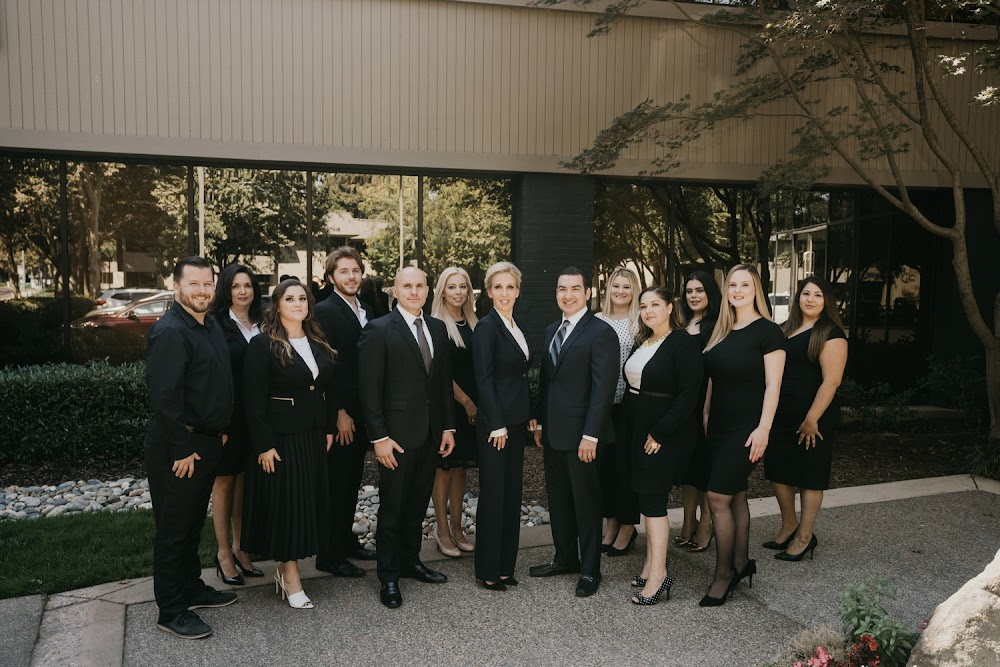

Catastrophic Trauma Requires Specialized Planning
Severe injuries can affect treatment, household roles, and financial choices long after an initial emergency has passed. Guidance from personal injury lawyers sacramento can help clarify how expert opinions, applicable procedures, and anticipated support needs should be considered together. Before major commitments are made, personal injury lawyers sacramento may help a family identify unanswered questions and determine which qualified professionals should contribute to the discussion.
Clinical information is most useful when its implications are translated into a realistic picture of daily support and future independence. personal injury lawyers sacramento can bring together input from treating providers and independent specialists, while personal injury lawyers sacramento may examine how a potential outcome would interact with continuing care and financial arrangements. The reasoning should remain open to revision as new testing, rehabilitation, or care recommendations become available.
Long-term arrangements should remain flexible enough to respond to changing capacity, costs, and personal goals. personal injury lawyers sacramento can help establish an ongoing process for communication and periodic reassessment that preserves the injured person's voice as circumstances develop. A measured approach supports informed decisions while leaving room for updated medical evidence and changing family priorities.

Initial Meetings Reveal Case Priorities
Legal support is easier to use when a conversation is candid and grounded in verifiable facts. A person speaking with personal injury lawyers sacramento may gain a clearer sense of how a matter can be evaluated, while personal injury lawyers sacramento can explain the standards that guide professional recommendations. This exchange gives the client room to describe practical concerns without assuming that every detail carries the same significance.
A useful discussion can address fee arrangements and the way routine communication will be managed. Asking personal injury lawyers sacramento about these working practices can make the relationship more predictable, while personal injury lawyers sacramento may clarify how progress will be reviewed and when additional expertise is appropriate. Clear expectations about communication often prevent small misunderstandings from becoming larger obstacles.
Strong representation also depends on mutual trust. Clients should feel comfortable asking for clarification or voicing concerns in plain language. Working with personal injury lawyers sacramento becomes more effective when both sides understand their roles, communicate promptly, and revisit the approach if circumstances change. A respectful professional relationship can support sound judgment without promising a particular result.
Collisions Create New Legal Questions
After an unexpected event, the most useful first step is to establish a reliable record of what occurred. personal injury lawyers sacramento can help assess whether witness accounts, camera footage, site conditions, and official reports are consistent, while personal injury lawyers sacramento may review how those details affect responsibility and the available path forward. Keeping original files, noting when each item was obtained, and avoiding edits to photographs can protect the credibility of the record.
Disputes often turn on details that are easy to overlook, including traffic signals, right-of-way rules, vehicle maintenance, and whether each participant acted reasonably under the circumstances. personal injury lawyers sacramento can examine these issues alongside available records, and personal injury lawyers sacramento may explain how shared responsibility or conflicting testimony could influence negotiations and court filings. A careful review also helps distinguish facts that can be verified from conclusions based only on assumption.
Timing and communication can shape the course of a claim even before a formal case is filed. Preserve relevant notices, observe applicable filing deadlines, and ask questions before signing a release or accepting a final offer; personal injury lawyers sacramento can provide case-specific guidance about those choices and whether settlement, mediation, or litigation is the more suitable route. The goal is a process that reflects the documented circumstances and leaves important decisions with the affected person.
Tiemann Law Firm
Tiemann Law Firm
1500 River Park Dr, Sacramento, CA 95815
(916) 999-9000